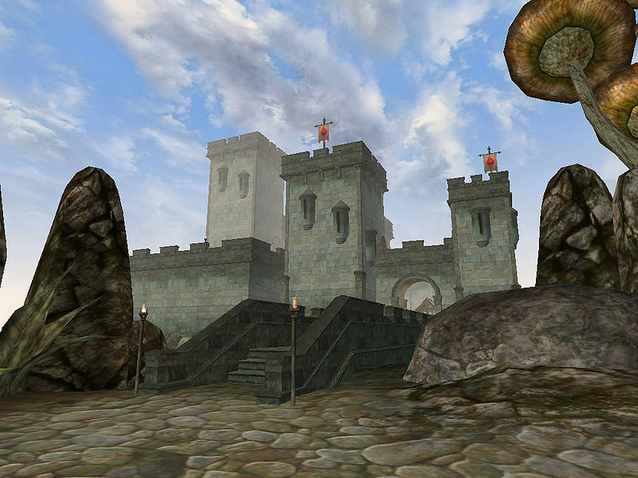

Morrowind:Wolverine Hall
Morrowind: Places
| Wolverine Hall |
| Alignment: Imperial |
| Region: Azura's Coast |
|
Transport:
Almsivi Intervention:
Divine Intervention:
|
Services:
|
 |
|  Wolverine Hall |
 The Cornerclub |
Situated just south of Sadrith Mora, Wolverine Hall is an attempt on the part of the Imperials to project power in a region of Vvardenfell where they are relatively powerless. The Telvanni tolerate the presence of the fort mostly because nobody cares enough to knock it down. Wolverine Hall houses the services not permitted in the town itself, such as the Mages Guild, Fighters Guild and Imperial Cult shrine. These are concealed within the fort itself. Between the Hall and the town itself is Dirty Muriel's Cornerclub, a Nord-style building that is home to the local Thieves Guild.
To reach the services, exit the door on the left as you enter the shrine from outside. Follow the spiral stairway up to the mages or down to the fighters. It is easy to get lost in the fort.
The Cornerclub
Dirty Muriel's Cornerclub is a social gathering place for people of the shadier kind, just outside of the fort.
People
Big Helende is the boss of the local Thieves Guild. Erer Darothril is the master trainer of Illusion in the Cornerclub. Skink-in-Tree's-Shade is the Mage Steward and master trainer in Speechcraft, but only serves high-ranking Guild members. Hrundi is the Champion and quest giver in the Fighters Guild downstairs.
Getting There and Around
The easiest access to the rest of Morrowind is through the Guild Guide in the Mages Guild.
Gals Arethi's boat, the Elf-Skerring at the harbor just beyond the Gateway Inn
can ferry you to Tel Branora and Ebonheart in the south and Tel Mora and Dagon Fel in the north.
The boat from Vos is one-way only.
Access to the wizard towers of Tel Fyr and Tel Aruhn is by Water Walking, swimming or levitation only.